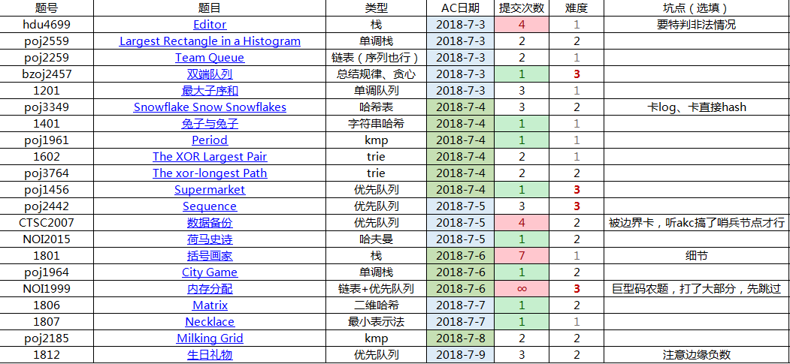

本处难度分档以个人实力为参照系
难度1：半小时内想出，半小时内ac
难度2：半小时想不出，看题解，服气
难度3：半小时想不出，看题解，ac后依然觉得难度很大

0x10 基本数据结构
1 HDU4699 Editor
7.3 难度1
要特判非法情况，这个是题目没有说明清楚的
2 POJ2559 Largest Rectangle in a Histogram
7.3 难度2
看到提示用单调栈，大概是想通了
但发现我只会暴力地确定右端点后，枚举左端点来统计答案
看了发题解，发现大概思路差不多，主要就是统计答案的方法
如果从右端点开始考虑，其左端点是不定的
但如果稍微换个角度，利用一下单调性，可以发现：
对于一个左端点，其最优的右端点只有一个，那就是在其存在时期内最后那个
所谓存在时期，就是它从进入到弹出期间
我们可以考虑在它被弹出的时候再统计答案，而这时候，新矩形一定比它小
所以从它到「第一个被当前新矩形弹出的矩形」之间，就是当前高度下的最优宽度
所以边弹出，边累加宽度并统计答案即可
3 POJ2259 HDU1387 Team Queue
7.3 难度2
偷懒，用了链表
然后看题，一是会有0，完全没注意就用了0表示空
二是多一个空行，读题时看到，写题时忘记
回想起不久前中考时也有这个毛病
或许应该写下这种注意点
4 bzoj2457 双端队列
7.3 难度3
思考难度很大
因为 要按照顺序处理数字，而又涉及大小关系，直接线性处理是不可能的
考虑把数列排序一波（也可以从数据范围上观察得出）
然后记录下标
思考能够放在同一个双端队列里，需要满足的特性
结论：
在同一个双端队列，对于编号最前的，
比它大的要在它后面出现，比它小的也要在后面出现，
而且与它的差越大，与它的距离差就应该越大
如果用图像来表示，把排序后的数列，排名为x，原坐标为y，
则必须是一个单谷图像
所以，大致上的流程就是：排序， 按从小到大处理数列，记录递增或递减趋势，记录有多少个图像
但还有个细节：对于排名也就是大小一样的数，它们的原坐标顺序是可以任意排列的
为了尽量减少单谷数量，对于大小相同的一段，内部在单调时最优。
所以只要记录每一段的最大和最小值，任意变形来贪心地连接起来就好了。
5 1201 最大子序和
7.3 难度1
这道题初看像是有限制条件的最大子段和，然鹅方法完全不一样
首先，因为有长度限制，在枚举右端点的过程中，需要把左端点向右移
那么因为和可以表示为sum[i]-sum[j-1],i-j+1<=m
因为我们的右端点是固定的，所以只要搞出一个符合条件中最小的sum[j-1]即可
稍微提醒一下，一定要明确是sum[j-1]而不是sum[j]，逻辑差别很大
然后就wa了多次……
6 POJ3349 Snowflake Snow Snowflakes
7.4 难度2
这道题是真的毒瘤
本来用hash判重，然后丢到set里面
结果不是hash被卡wa就是stl被卡tle
总之，不得不用hash表，第一次写这玩意，以前只会理论
各种tle，抄了很多书上的代码，改了改类型、模数，才卡了过去
7 1401 兔子与兔子
7.4 难度1
裸题
8 POJ1961 Period
7.4 难度1
经典题
9 1602 The XOR Largest Pair
7.4 难度1
居然对了！
虽然不是1a，因为有个地方，得到的是int，就re了
思路：
把所有数转化成二进制，用类似字典树的结构存储
对于i，先统计答案，i是其中一个，贪心地找另一个
具体来说，贪心地从高位开始，尽量往反方向走，累计答案
当然是在不行还是要走正方向
统计完后，把这个串加入到字典树中供后人用
10 POJ3764 The xor-longest Path
7.4 难度2
想了一个小时，看到题解前半段的那一刻，难受的一匹
原来和上一题是一样的！
x到y路径上xor和=x到根xor和 xor y到根xor和
这基于同一个数xor自己，得到0，而0 xor 任何数=任何数
然鹅，自己在思考的时候，却想着还要xor lca(x,y)到根
因为感觉那部分只出现了一次，神tm自己想再补上一次……
感觉这给我的教训是要多动笔写下来，这样不容易错
我才不会说这是因为笔被我整天乱扔，摔断墨了……
自作自受吧
11 POJ1456 Supermarket
7.4 难度3
一开始写了个错误的贪心：
直接按照过期排序，第二关键字是价值
但这样就考虑不了「过期冲突，价值极大」的情况
先明确：如果现在是第t天，则应卖出能卖出的前t大
有一个套路，能够给限定数量的局部贪心后悔药：
维护一个大小为t的堆，堆顶是最不优秀的元素，尝试替换来修正原方案
12 POJ2442 Sequence
7.5 难度3
1.
既然跟大小有关，先把每个序列排好序，确认了最小答案
2.
因为直接枚举方案会超时
这是因为产生了很多因为过大而无用的状态
这就用到了一个新套路（又被akc轻松想出）
把所有最小值组成一个方案，放进堆里面
通过堆进行决策的同时，基于堆的最优性进行拓展
因为我们已经排好了序，拓展只是某个指针的前移
此时复杂度是$O( n^2 \times log(nm) )$
濒临超时
3.
然鹅，上述方案有个致命的问题
两个不同的状态可能拓展出相同的状态
感觉强行hash判重也可以，不过没必要
4.
有一个不那么好想的方法（或许利用了答案要求的数量和序列长度相同这个特性）
先把两个序列合并，把得到的前n个作为一个新的序列
然后像同余方程组那样逐个合并。
而且，由于每次只处理两个数列，可以用bool判重解决上面的问题
复杂度$O( m \times n \times 2 \times log(n) )$，飞快
|
|
13 CTSC2007 数据备份 & bzoj2151 种树
7.5 难度2
这道题一年多以前做过，当时并没有blog
然后我yy着就和远古时期的我产生了共鸣，回忆起了一个细节：在堆中进行可后悔决策
然鹅完全没有思路
虽然顺便又把一个关键性质想到了：不会有线路的重叠，故只会和旁边产生关系
如果想到这里，想必大佬们都能快速的想到怎么做
然后我还是蒙逼状态，尽管我又把一个关键的图画了出来：四个点之间的连线x-1、x、x+1
是不是觉得我灰常无可救药？都已经把所有前提想到了，还是不会……
事实上：
有一种贪心策略：每次找最短的一条边，然后把它两边的删除
但这样其实很容易举出反例，例如4,2,4,100000
怎么办？引入后悔机制，不要急着排除两边
相反，在堆种放入一个c[x-1]+c[x+1]-c[x]
也就是说，如果我再选择了一次，那么我就是花费两条边，把x-1和x+1建好了
当然如果没有再被拿出，意味着没必要
细细思考，不难发现这样能同时满足互斥的两种状态决策
总而言之，听起来灰常有道理，只不过不好想到「据说是一种模型，靠积累」
还有一些细节
- 如果我们放进去的被拿出来，意味着建两条边，
那还是要找左右两侧的更远的边，在堆中去除
因为要延长伸展，用链表比较方便 - 去除可以用可删堆，但还要确保编号相同；用set就灰常不方便了，毕竟是结构体；
还有种方法是判断其是否和外界数据不同，表示其过时，直接弹出123456789101112131415161718192021222324252627282930313233343536373839404142434445464748495051525354555657585960616263646566using namespace std;const int MAXN=110000;const int INF=0x3f3f3f3f;typedef long long ll;typedef unsigned long long ull;int mymax(int x,int y) {return x>y?x:y;}int mymin(int x,int y) {return x<y?x:y;}struct Nod{int d,x;Nod(int a=0,int b=0) { d=a,x=b; }friend bool operator > (Nod a,Nod b) { return a.d>b.d; }};priority_queue< Nod,vector<Nod>,greater<Nod> > q;int s[MAXN];int l[MAXN],r[MAXN];int main(){int n,k;scanf("%d%d",&n,&k);int lst=0;for(int i=1;i<=n;i++){int t;scanf("%d",&t);s[i]=t-lst;lst=t;if(i>1) q.push( Nod(s[i],i) );l[i]=i-1;r[i]=i+1;}//边界哨兵节点l[2]=1;s[1]=INF;r[n]=n+1;s[n+1]=INF;int ans=0;while(k--){while(q.top().d!=s[q.top().x]) q.pop();//oldNod now=q.top();q.pop();int x=now.x,left=l[x],right=r[x];//后悔药s[x]=s[left]+s[right]-s[x];//debug 忘记更新s[x]，直接塞进去了q.push( Nod(s[x],x) );//删除左右l[x]=l[left];r[l[left]]=x;r[x]=r[right];l[r[right]]=x;s[left]=INF;s[right]=INF;//统计答案ans+=now.d;}printf("%d",ans);}
14 NOI2015 荷马史诗
bzoj4198 luogu2168 uoj130 loj2132
7.5 难度2
入门好题，教程：「OI之路」09经典问题-3哈夫曼树
唯一不同的是第二问，要求最大深度最小
构造哈夫曼树的时候，我们只是保证了带权路径长度和最小
但当我们面对两个相同权值，但是一个下面的最大深度大的和小的
这个时候，如果先合并下面的最大深度大的，答案会更大
而先合并小的，就能把后面的机会留下了，从而减小了树的最大深度
具体做法很简单，重载堆的比较函数时，
把下面的最大深度作为第二关键字，优先小的就好了
0x18 基本数据结构练习
15 1801 括号画家
7.6 难度1
考细节……
应自己构造数据
16 POJ1964 City Game
7.6 难度2
骚操作
预处理出每个点最大向上高度
然后看作是二维的Largest Rectangle in a Histogram……
17 NOI1999 内存分配
7.6 难度2
打了一大半
很多细节问题
先放着代码吧
复杂度估计$O(n \sqrt n)$（如果块状链表）
18 1806 Matrix
7.7 难度2
第一次二维hash，所以学了下
题目的特性在于a和b固定，所以可以直接预处理出每个矩阵的hash
然后排个序，后面的询问就灰常快了
19 1807 Necklace
7.7 难度1
最小表示法裸题
20 POJ2185 Milking Grid
7.8 难度2
有关kmp与最小覆盖的前置知识，请搜索kmp查看教程
然后一开始猜一手结论，行取max，列同样，居然ac了
其实后来我和mocha经过探讨发现，max是不正确的
（例如6和9，除非问题改成陶陶的名字），应该取lcm
UP 2018.7.11
其实lcm也是错误的
反例
8 2
AABBBBAA
AAABBAAA
正确的方法应该是强行比较的kmp（hash也行，快一点）
代码已更正
21 bzoj2288 生日礼物
7.9 难度2
有一个灰常关键的步骤：
由贪心知，连续的正数、负数一定是同时选取的
所以可以直接合并起来考虑
把正数的段计数，我们的任务就是，
在花费最少的前提下，把正数减少到m及以下
减少的方法有两个，一是选取一个正数，然后把相邻的负数合并起来（因为必须要连续），代价为正数值
二是选取一个负数，把相邻的正数合并，这样代价是负数绝对值
综上所述，我们可以把所有数的绝对值放到小根堆里面，统计正数的数量，每次弹出直到数量在m以下即可
还有两个细节
- 三个数合并之后，正负性是没有意义的，我们前面是为了统计tot并确保算法正确性
- 对于边缘的负数，要予以忽略！1234567891011121314151617181920212223242526272829303132333435363738394041424344454647484950515253545556575859606162636465666768697071using namespace std;const int MAXN=110000;const int INF=0x3f3f3f3f;typedef long long ll;typedef unsigned long long ull;int mymax(int x,int y) {return x>y?x:y;}int mymin(int x,int y) {return x<y?x:y;}int myabs(int x) {return x>0?x:-x;}struct Num{int d,pos;Num(int t,int p) {d=t,pos=p;}friend bool operator > (Num a,Num b) {return myabs(a.d)>myabs(b.d);}};int f[MAXN];//值int l[MAXN],r[MAXN];//链表priority_queue< Num,vector<Num>,greater<Num> > q;void del(int x){f[x]=INF;r[l[x]]=r[x];l[r[x]]=l[x];}int main(){int n,m;scanf("%d%d",&n,&m);int ans=0,tot=0,cnt=0;for(int i=1;i<=n;i++){int t;scanf("%d",&t);if( i>1 and (t>0)==(f[cnt]>0) ) f[cnt]+=t;else f[++cnt]=t;}for(int i=1;i<=cnt;i++){if(f[i]>0) tot++,ans+=f[i];q.push( Num(f[i],i) );l[i]=i-1;r[i]=i+1;}while(tot>m){tot--;//debug 要在前面while(!q.empty() and q.top().d!=f[q.top().pos]) q.pop();//oldNum now=q.top();q.pop();int x=now.pos,lx=l[x],rx=r[x];if( (l[x]!=0 and r[x]!=cnt+1) or f[x]>0 ){ans-=myabs(f[x]);f[x]=f[lx]+f[x]+f[rx];q.push( Num(f[x],x) );del(lx);del(rx);//删除}else tot++;//忽略边缘负数}printf("%d",ans);}